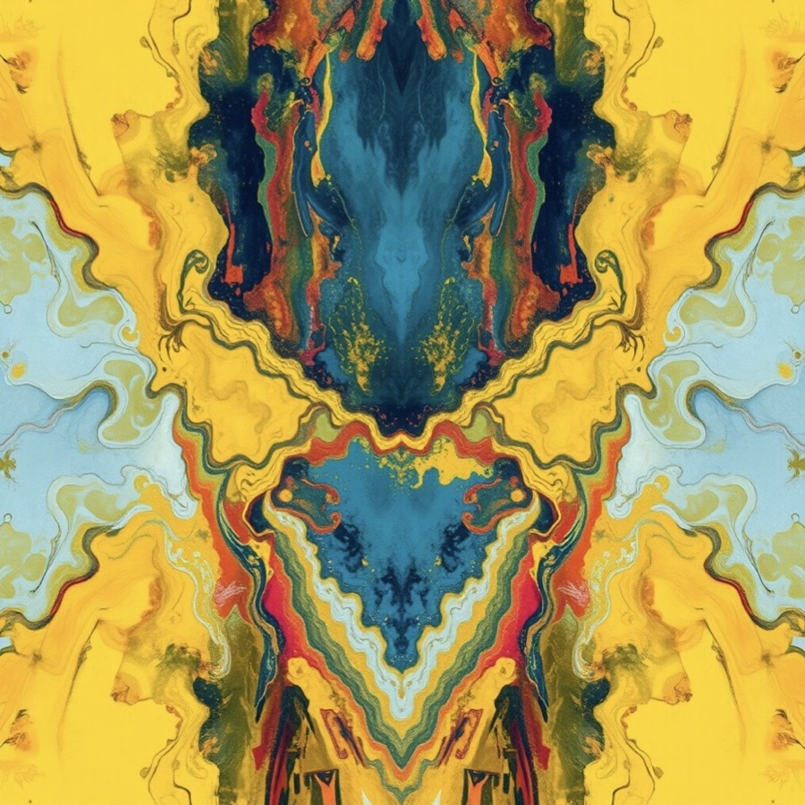
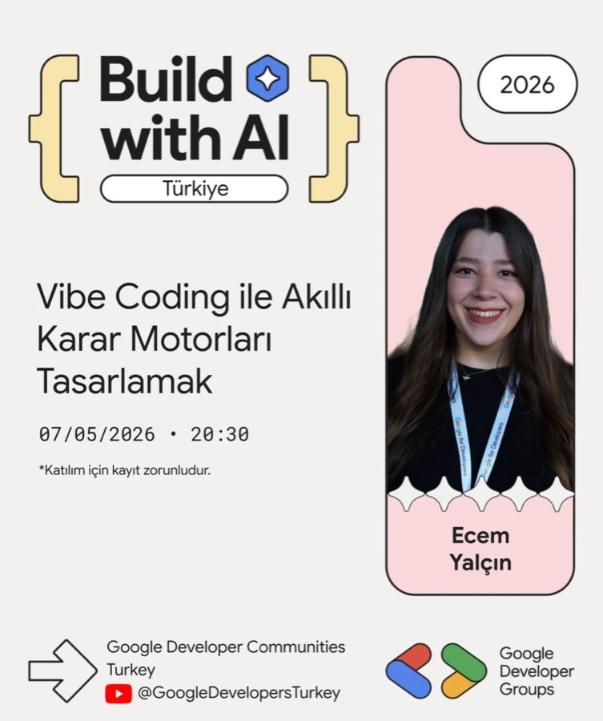
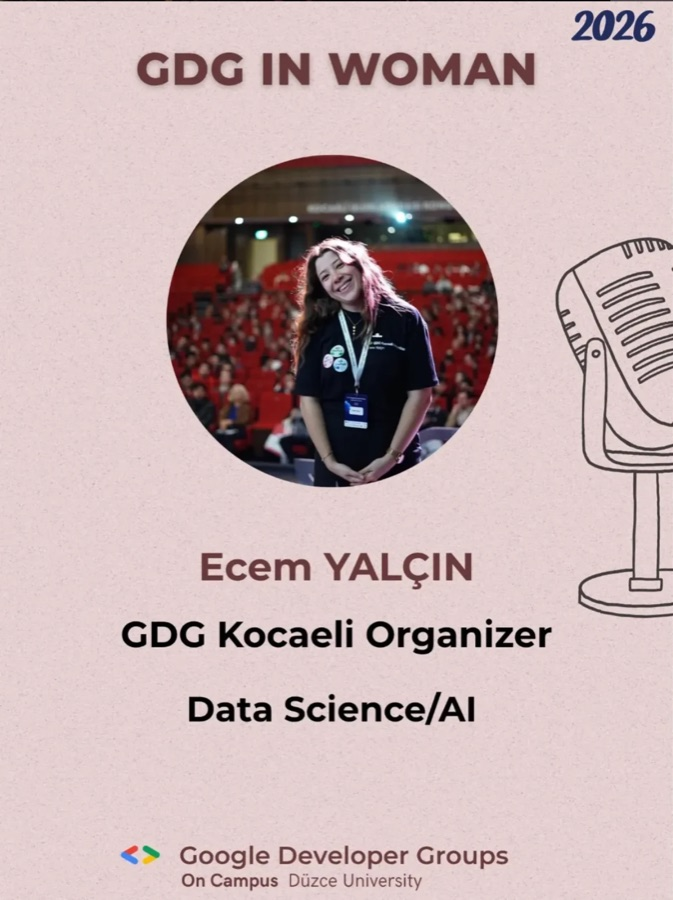

Ecem Yalçın
AI Engineer — speech, vision & language.
Currently building emotion AI as an AI Engineer at CallMetric AI — in-vehicle emotion recognition, emotion analysis on call-center conversations and real-time live coaching for agents.
Computer Engineering graduate from Kocaeli University. I've worked on computer vision, medical imaging, LLM agents and real-time data pipelines — and I organize AI & cloud events as part of Google Developer Groups Kocaeli.
01Career
CallMetric AI
- Developing in-vehicle speech emotion recognition as continuous valence–arousal prediction — benchmarking Whisper, Wav2Vec2 and emotion-specific encoders, with noise-augmented training and English/French cross-lingual evaluation.
- Transcribing call-center audio and running emotion & sentiment analysis on both the speech and the transcripts.
- Building a live coaching system that guides call-center agents in real time based on the emotional flow of the conversation.
- Built an end-to-end speech emotion recognition pipeline, from data sourcing and preprocessing to model training, predicting valence–arousal and emotion categories.
- Integrated the models with a fine-tuned Turkish Whisper ASR and speaker diarization on production call data.
- Worked on AWS VMs over SSH, monitoring RabbitMQ request flows and CRM integration.
DecodeLabs
- Data cleaning, EDA, statistical analysis, feature engineering and transformation with Python, Pandas, NumPy and SQL.
Erkba (Bilişim Vadisi)
- Built a YOLOv8 + ByteTrack fish detection and tracking system — 93.5% mAP@50, 91.3% precision, 88.1% recall.
- Developed image processing pipelines for computer vision and industrial inspection using PyTorch, OpenCV, PCA, K-Means and Otsu.
Kocaeli University
- Skin cancer detection and medical image analysis: data processing, augmentation and CNN-based classification models.
Toyota
- Developed backend services and RESTful APIs with ASP.NET, C# and MSSQL; designed SQL queries and database schemas.
02Projects
In-Vehicle Speech Emotion Recognition →
Continuous valence–arousal prediction from speech, built for robustness in noisy, real-world cabin conditions.
Call-Center Emotion Analytics & Live Coaching →
Real-time call analysis combining speech-to-text with emotion understanding — and coaching agents while the call is still happening.
understood.
Enterprise AI Document Intelligence ↗
AI document processing platform with Clean/Layered Architecture, RAG and async processing.
Fintech Credit Risk Engine ↗
Real-time credit risk platform with streaming ingestion and ML models trained on Spark MLlib.
AI Research Agent
RAG-based multi-agent assistant that automates literature research and report generation.
documents anything.
Gemini Document Explainer API ↗
Document Q&A with chunking, embeddings and cosine-similarity semantic retrieval.
LiteVision Studio ↗
Browser-based computer-vision playground — object, hand, face, pose and OCR detection running fully client-side, with FPS and latency benchmarking.

Thesis · Case studyMusic Emotion Recognition & Emotion-to-Art Engine →
Predicting valence–arousal from music, comparing AI with 298 human listeners and Gemini — then turning emotions into generative art.
Fish Detection & Tracking ↗
YOLOv8 + ByteTrack system with 93.5% mAP@50, 91.3% precision and 88.1% recall.
detection
Skin Cancer Classification
Preprocessing, augmentation and CNN-based classification for medical image analysis.
More on GitHub
Bird Species Detection
↗Bird species detection and fine-grained classification with multi-step preprocessing and multi-architecture training pipelines.
Parkinson's Disease Detection
↗ML on biomedical voice data — disease classification and symptom-score regression with scikit-learn and XGBoost.
Fake News Detection
↗Machine-learning model for fake-news detection, with a Streamlit interface for real-time testing.
Mini RAG with Gemini
↗Minimal RAG pipeline using Gemini embeddings, vector-store search and context-aware answering.
Build with AI Türkiye — Talk Slides
↗Slides from my Build with AI Türkiye 2026 training: designing smart decision engines with vibe coding.
Fintech Credit Risk Engine
↗Distributed data processing and credit-risk modeling on the Lending Club dataset.
DecodeLabs Internship
↗Data-science experiments, analyses and projects from my DecodeLabs internship.
Birth Rate Analysis
↗US birth data — feature engineering, anomaly detection, forecasting with Prophet & ARIMA, and statistical testing.
President Heights
↗Exploratory analysis with visualizations and regression / classification models on US presidents' heights.
Enterprise AI Document Intelligence
↗AI document processing platform on ASP.NET Core with RAG, Qdrant and RabbitMQ.
Veri Avcısı
↗Upload Excel and PDF files and search through your data.
03Skills
AI / ML
- PyTorch, Scikit-learn
- CNN, CRNN, Transformers
- YOLOv8, OpenCV
- LLMs, RAG
- Whisper, Audio Processing
- Speech Emotion Recognition
DATA
- Kafka, Spark
- Delta Lake, MLflow
- Pandas, NumPy
- SQL, EDA
- Feature Engineering
BACKEND
- FastAPI, Python
- ASP.NET Core, C#
- PostgreSQL, MSSQL
- RabbitMQ, Redis
- Clean Architecture
INFRA & AGENTS
- AWS, SSH
- Docker
- LangGraph, Qdrant
- Gemini, FLUX.1
- Git, GitHub
04Speaking

Designing Smart Decision Engines with Vibe Coding ↗
Speaker & instructor — hands-on training session for Google Developer Communities Turkey.
Speaker · Instructor
GDG in Woman — Women in Tech
Speaker on data science & AI, sharing my journey as a GDG Kocaeli organizer.
Speaker05Education & Community
Kocaeli University
B.Sc. in Computer Engineering
Google Developer Groups Kocaeli
Organizer — running community events on AI, cloud computing and software engineering, working with speakers and industry professionals.
06Interests
Languages: Turkish (native) · English (professional working proficiency)